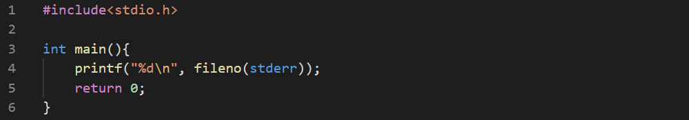

Using a file by stdio.h uses a dedicated structure named FILE.We use a pointer to that structure.
- We use fopen() to open a file which returns a pointer to that structure otherwise returns NULL.
- All the file functions expect this pointer as an argument identifying the opened file. They perform task and updates the structure.
- The fclose() function closes the file and invalidates the structure.
But the open() returns an int. This int indicates to a specific index of an array consisting of complicated structures. This index is named a file descriptor. Some of the descriptor are quite predictable in contrary to FILE * pointers. For example,- 0 - connected to stdin
- 1 - connected to stdout
- 2 - connected to stderr.
The files opened subsequently will have descriptors of increasing numbers. So, the next open file will have 3 as its file descriptor.
The function returns -1 if an error occurs.
Any file represented by a FILE structure is in fact assinged/connected to a corresponding file descriptor. It's possible to find the descriptor connected to the FILE structure by using the fileno()function.
It isn't possible the other way around.


This prints 2.
If opening the file is unsuccessful, we can know the reason by using errno.h. It has a variable named errno which holds a number responsible for a specific problem.
- EACCES (13) - Permission denied.
- EBADF (9) - Bad file descriptor. (Bad means invalid)
- EEXIST (17) - File exists (But you tried to create a file of the same name.
- ENOENT (2) - No such file or directory. (You've tried to access)
- EMFILE (24) - Too many open files.
- ENOSPC (28) - No space left on the device.
- EIO (5) - I/O error. (Fatal)
The following program outputs 9.